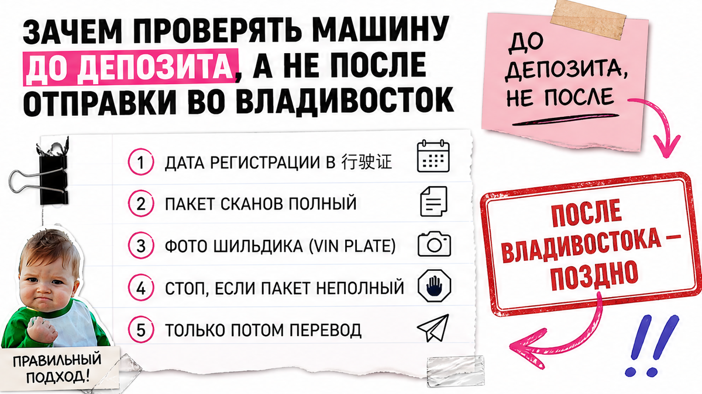
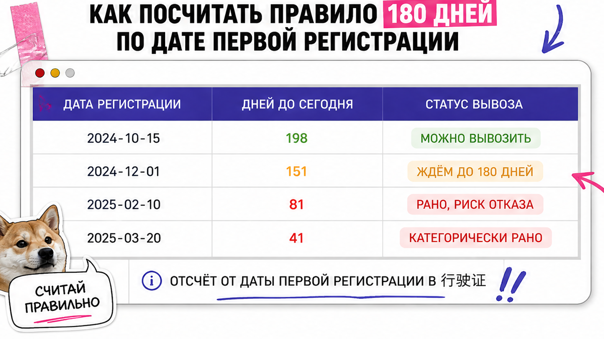

Иван уже готовил перевод за кроссовер "почти новый, 800 км, завтра снимем с учёта". Друг спросил одно: "А дата первой регистрации на 行驶证 какая?" Иван не знал. Через две недели лот младше 180 дней стоял у границы без экспортной лицензии, а депозит "в работе". Проверка авто из Китая с пробегом начинается до оплаты: календарь, сканы и стоп по красным флагам – ниже чеклист на 2026.
Коротко по делу: 180 дней считают от даты первой регистрации в китайском документе, не от года выпуска. Если дней 180 и меньше – без письма завода (售后维修服务确认书 / After-Sales Service Confirmation Letter) экспортную лицензию не выдадут. До депозита соберите сканы 行驶证, 交强险, фото VIN и одометра. Нет даты или письма на "молодой" лот – денег нет.
Спрос на б/у из Китая в 2026 вырос резко: по Автостат за январь–август в РФ ввезли около 75 тысяч легковых с пробегом (+98% г/г). Новичков больше – и ловушек до оплаты тоже. Цель: дата регистрации, пакет сканов и ответ "платить / не платить" до депозита.

Деньги после перевода вернуть почти невозможно. А машина без лицензии может застрять ещё в Китае. В феврале 2026 у границы с Приморьем застряло около сотни авто из-за ужесточения правил экспорта – об этом писали на VL.ru.
Типичная ошибка: смотреть только красивые фото и цену "как новая", а документы просить "потом". Сделайте наоборот: сначала сканы и календарь, потом депозит. Избегайте перевода "чтобы закрепить лот", пока нет даты регистрации.
Схема до денег:
Фото лота → скан 行驶证 с датой регистрации → счёт 180 дней → пакет сканов и VIN → стоп или ок → депозит

Правило 180 дней – не миф "всем ждать полгода". С 1 января 2026 при подаче на экспорт, если от даты регистрации прошло 180 дней или меньше, экспортёру нужно письмо завода о послепродажном обслуживании. Основание – Shangmao Han [2025] No. 648 (MOFCOM, MIIT, MPS, GACC от 11.11.2025). Разборы: CNLegal и англ. перевод на ecaicar.com.
Считать нужно только от даты первой регистрации в китайском регистрационном документе (行驶证 – это как "права+учёт" на авто). Не от года на шильдике, не от даты оплаты и не от "когда сняли с учёта". Используйте календарь и дату из скана – это единственный ориентир.
На практике путают "год выпуска 2025" и "зарегистрирована вчера". Например, машина собрана раньше, а на учёт поставлена недавно – отсчёт идёт от свежей даты.
Делать: считать дни от регистрации и писать продавцу точную цифру.
Не делать: верить фразе "она почти новая, значит точно можно вывезти".
Без документов вы покупаете рассказ. Минимальный пакет до депозита такой:
Сверьте VIN: шильдик = документ = переписка. Любое расхождение – стоп. В реальном проекте импорта именно эта сверка отсекает "сборную солянку" из чужих фото и чужого VIN.
Не делайте вид, что "потом разберёмся". Если продавец тянет со сканами – вы уже получили ответ. Проверьте пакет по списку выше и отправьте запрос одним сообщением менеджеру или в Telegram Авто-Сейлс.
After-Sales Service Confirmation Letter (售后维修服务确认书) – письмо завода-производителя. В нём обычно указывают страну назначения, данные авто, сервисные точки за рубежом и ставят печать завода. Это не справка от перекупа и не бумажка локального дилера.
Письмо нужно при сроке 180 дней и меньше. Тотального запрета на вывоз "молодых" машин в уведомлении нет, но без письма лицензию не выдадут. Sales-subsidiary, overseas dealer или "модификатор" вместо завода из списка MIIT письмо выдать не могут (гайды вроде CyhaoChe это прямо разбирают).
| Ситуация | Что проверить до оплаты | Вердикт для новичка |
|---|---|---|
| Регистрации больше 180 дней | Сканы 行驶证, 交强险, VIN, фото с площадки | Можно обсуждать депозит после полного пакета |
| Регистрации 180 дней и меньше | Тот же пакет + статус письма завода с печатью, VIN и страной назначения (РФ) | Без письма – не платить |
| Дату регистрации не показывают | Повторный запрос скана 行驶证 | Отказ = стоп, даже если фото красивые |
| "Письмо сделаем через партнёра" | Кто именно выдаёт: завод из MIIT или "кто-то ещё" | Не завод – не считается |
Итоговый вердикт: "Молодой" лот без письма завода – это не скидка, а риск зависшего депозита. Безопасный сток старше 180 дней всё равно не покупают без сканов.
Вот сигналы, после которых перевод не делают – даже если цена "огненная":
Честно говоря, половина проблем решается одной фразой: "Пришлите скан 行驶证 с датой регистрации до любого депозита". Если в ответ тишина или обида – лот вам не подходит.
Пройдите список как пропуск к деньгам. Если хоть один пункт "нет" – депозит не уходит.
Суммы пошлин и утильсбора здесь не считаем – цифры плывут. Актуальный расчёт и подбор – в каталоге Авто-Сейлс. Сверить пакет по лоту можно в Telegram @avtosales125 со сканами, не с одним скрином цены.
Успех выглядит так: заполнен чеклист до оплаты, есть дата первой регистрации, понятно нужен ли After-Sales Service Confirmation Letter, депозит не уходит при неполном пакете. Проверьте дату регистрации – получите ясный вердикт "платить / не платить" до перевода. Это и есть критерий "я проверил авто из Китая с пробегом правильно".
Офис Авто-Сейлс: Владивосток, Днепровская 40а стр. 4. Первый шаг можно сделать из любой точки РФ: отказ в деньгах без сканов.
Материал проверен: Редакция Авто-Сейлс (эксперты по авто под заказ из Японии, Кореи и Китая).
Достоверность: норма 180 дней и письмо завода сверены с разбором уведомления Shangmao Han [2025] No. 648 на CNLegal и англ. переводом ecaicar (прогон 2026-10-01); кейс застрявших авто у Приморья – VL.ru (фев 2026); объём импорта б/у из Китая – Автостат / Авто Mail (янв–авг 2026). Актуальные расчёты по конкретному лоту – в каталоге Авто-Сейлс.
Это порог для экспортной лицензии: отсчёт идёт от даты первой регистрации в 行驶证. Если дней 180 и меньше, без письма завода о послепродажном обслуживании лицензию не дают. Посчитайте дни по календарю до любого депозита.
Формального тотального запрета нет. Нужен After-Sales Service Confirmation Letter именно от завода с печатью, VIN и страной назначения. Нет письма – не платите и не верьте обещанию "сделаем потом".
Минимум: скан 行驶证 с датой регистрации, 交强险, фото шильдика VIN, одометра и свежие фото с площадки. Для "молодого" лота добавьте статус письма завода. Пакет неполный – депозит не отправляйте.
Только от даты первой регистрации в Китае. Год выпуска, дата перевода и дата "снимется с учёта" для этого порога не подходят. Запросите скан и считайте от поля регистрации.
Производитель из релевантного списка MIIT, не дочерняя sales-компания и не overseas dealer. Спросите письменно: кто печатает документ и есть ли в нём РФ как страна назначения. Ответ размытый – стоп.
Повторите запрос скана 行驶证 и статуса письма при ≤180 днях. Дайте срок на документы, а не на перевод. Ушёл без сканов – скорее всего, ушёл правильный риск.